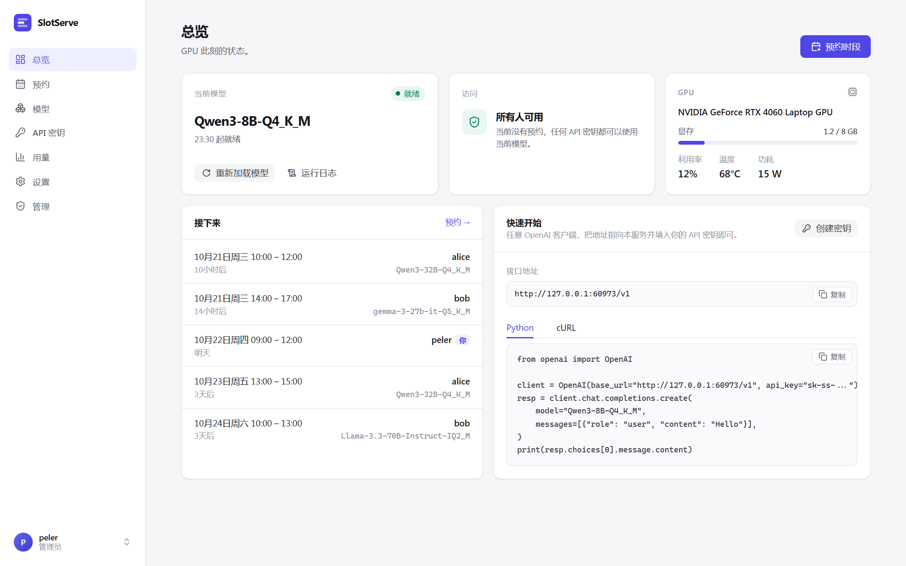

SlotServe¶
SlotServe 把 GPU 服务器变成可预约的共享服务。 用户在网页日历上预约时段，预约期间独占 GPU，并用自己的 API 密钥通过 OpenAI 兼容接口调用模型。SlotServe 负责托管推理进程（llama.cpp 的 llama-server、vLLM、SGLang 或你自己的服务），并在每个预约开始前自动切换模型。

为什么需要它¶
实验室或小团队常常共用一张大显卡。缺少协调时，你加载的 30B 模型会被别人的实验卸掉，没人知道谁在用卡，从机械盘加载模型又要等很久。SlotServe 用三条规则解决：
- 预约独占。 预约时段内只接受预约者的 API 密钥。
- 空闲共享。 没人预约时，所有密钥都能使用默认模型。
- 切换模型需要预约。 这样调度器能在你的时段开始之前把模型加载好。
功能¶
| 日历预约 | 在周视图上拖选即可预约；先到先得，可选管理员审批 |
| OpenAI 兼容网关 | /v1/chat/completions、/v1/completions、/v1/embeddings 及推理服务的其他接口，支持流式 |
| 个人 API 密钥 | 创建、命名、吊销；只保存 SHA-256 哈希 |
| 托管推理进程 | 由 SlotServe 启动、健康检查、重启和切换；每个模型的启动参数可在网页上编辑 |
| 预加载 | 自动学习每个模型的加载耗时，提前加载下一个预约的模型 |
| 模型下载 | 粘贴直链（如 Hugging Face 的 resolve 链接）；支持断点续传，逐个下载 |
| 用量统计 | 按用户、按模型统计请求数、输入/输出 token 和预约时长 |
| 管理面板 | 管理用户、预约和 API 密钥，在线修改系统设置，审计日志 |
| 灵活预约 | 整卡预约、参数预设、每周重复、延长、候补、配额 |
| 开发环境 | 把 GPU 时段预约成可 SSH 登录的 Docker 容器：PyTorch、TensorFlow、CUDA 或自己的镜像，可保存为镜像下次直接用 |
| 多 GPU 与多后端 | GPU 分通道独立预约；llama.cpp、vLLM、SGLang 或自定义服务；可选审批模式 |
| 集成 | Telegram、飞书 / Lark、钉钉、企业微信和 QQ 上的通知与预约机器人、群机器人、日历订阅、CSV 导出、Prometheus 指标 |
| GPU 状态 | 来自 nvidia-smi 的显存、利用率、温度和功耗 |
| 双语界面 | 简体中文与英文 |
| 部署简单 | 一个容器、SQLite、三个目录挂载 |
工作原理¶
flowchart LR
browser["浏览器"] -- "/api" --> web
clients["OpenAI SDK 与工具"] -- "/v1 + API 密钥" --> gw
subgraph slotserve["SlotServe · 单个容器 · SQLite"]
direction TB
web["Web API<br/>预约 · 模型 · 管理"]
gw["网关<br/>鉴权 · 准入 · 用量"]
sched["调度器<br/>每个通道一个"]
end
subgraph gpus["GPU 通道"]
direction TB
l1["通道 1 · GPU 0<br/>llama-server"]
l2["通道 2 · GPU 1,2<br/>vLLM / SGLang / 自定义"]
end
gw -- "转发请求" --> gpus
sched -- "启动 · 切换 · 停止" --> gpus通道是一组 GPU，有自己的推理进程、调度器和预约日历。单卡机器只有一个通道，界面上也不会出现通道相关的内容。
下一步¶
- 快速开始：几分钟内用 Docker Compose 部署。
- 调度原理：预约前后会发生什么。
- 接口：把 OpenAI 客户端指向 SlotServe。
- 多 GPU 与推理后端：多张 GPU、vLLM 和 SGLang、审批模式。